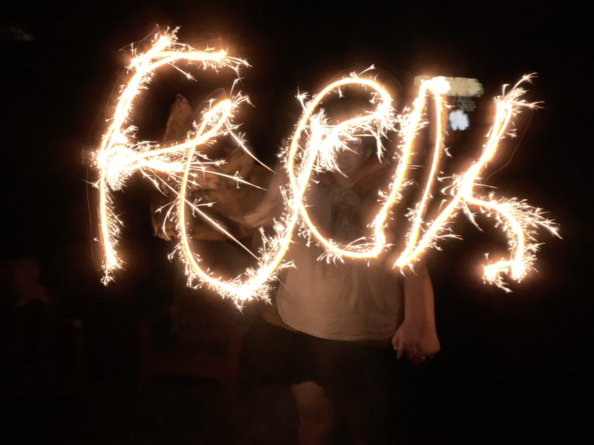

Over the summer, Chloe, Taylor, Lex, and I went to Long Island with my mom.

We did lots of swimming, thrifting, and shooting off fireworks.
On the night before we left we were laying on the beach looking up at the stars. Taylor was upset because we had been seeing shooting stars all weekend and she hadn’t ever seen one. I said, "Wouldn't it be cool if we all saw one at the same time?" But before I could finish my sentence WE ALL SAW A SHOOTING STAR AT THE SAME TIME. We were screaming and cackling like witches.